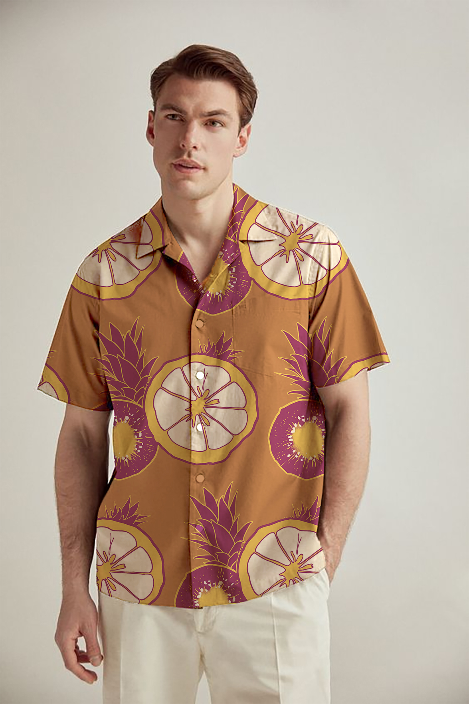
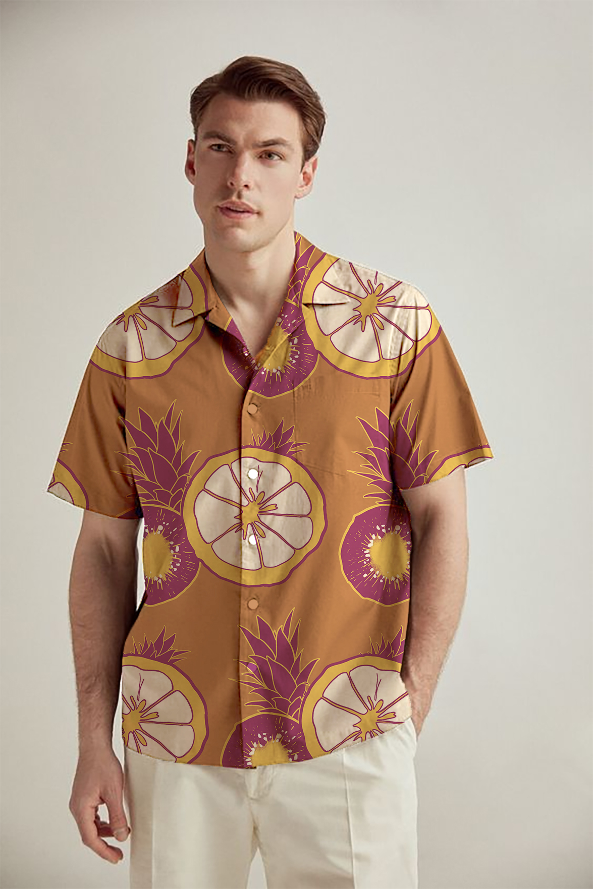
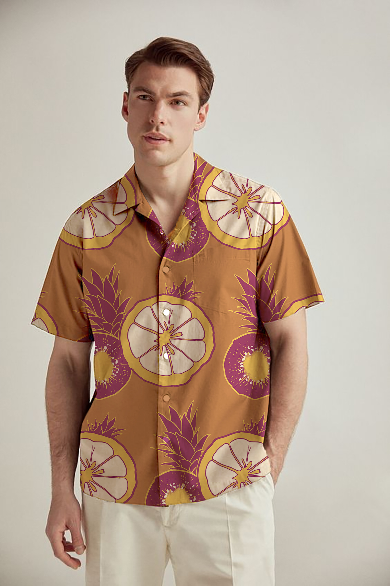

Frutal
Março 2023
Projeto desenvolvido para o curso de design de estampas para superfícies têxtis pela Domestika e ministrado por Isabela Oliveira.
 

Março 2023
Projeto desenvolvido para o curso de design de estampas para superfícies têxtis pela Domestika e ministrado por Isabela Oliveira.
